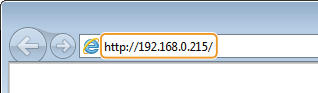
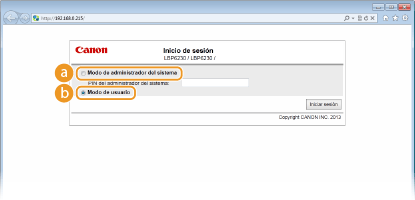
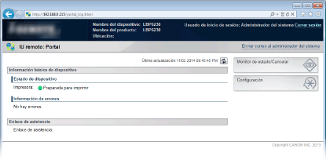
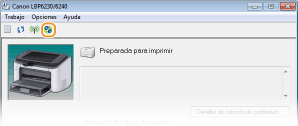

0KXF-036
Para utilizar el equipo de forma remota, inicie el IU remoto introduciendo la dirección IP del equipo en su navegador web. Antes de empezar, compruebe la dirección IP que se ha asignado al equipo (Visualización de las opciones de red). Si no conoce la dirección IP del equipo, pregunte al administrador de su red o inicie el IU remoto desde la Ventana Estado de la impresora (Inicio de la Ventana Estado de la impresora).
1
Inicie el navegador web.
2
Introduzca "http://<Dirección IP del equipo>/" en el campo de dirección y pulse la tecla [ENTRAR].

Si utiliza una dirección IPv6, introduzca la dirección IPv6 entre paréntesis (por ejemplo: "http://[fe80::2e9e:fcff:fe4e:dbce]/").

Si se ha registrado un nombre de host del equipo con un servidor DNS
En lugar de <Dirección IP del equipo>, puede introducir <"nombre de host"."nombre de dominio"> (por ejemplo: "http://my_printer.example.com").
Si aparece una alerta de seguridad
Cuando la comunicación con el IU remoto está cifrada, es posible que aparezca una alerta de seguridad (Activación de la comunicación cifrada SSL para el IU remoto). Si no hay ningún problema con las opciones de certificado o con las opciones de SSL, continúe navegando por el sitio del IU remoto.
3
Seleccione [Modo de administrador del sistema] o [Modo de usuario].

 [Modo de administrador del sistema]
[Modo de administrador del sistema]Puede ejecutar todas las operaciones del IU remoto y realizar todos los ajustes. Si se ha establecido un PIN (contraseña del administrador del sistema), introdúzcalo en [PIN del administrador del sistema]. (Configuración de contraseñas de administrador del sistema) Si no se ha establecido ningún PIN (configuración predeterminada de fábrica), no necesitará introducir ningún dato.
 [Modo de usuario]
[Modo de usuario]Puede consultar tanto el estado de los documentos o del equipo como la configuración.
4
Haga clic en [Iniciar sesión].
 |
Aparece la página del portal (página principal) del IU remoto. Pantallas del IU remoto
 |

Si no conoce la dirección IP el equipo, puede iniciar el IU remoto desde la Ventana Estado de la impresora.
1
Seleccione el equipo haciendo clic en  en la bandeja del sistema.
en la bandeja del sistema.
en la bandeja del sistema.
2
Haga clic en  .
.
.
|
|
Se iniciará su navegador web y aparecerá la página de inicio de sesión del IU remoto.
Si aparece una alerta de seguridad
Cuando la comunicación con el IU remoto está cifrada, es posible que aparezca una alerta de seguridad (Activación de la comunicación cifrada SSL para el IU remoto). Si no hay ningún problema con las opciones de certificado o con las opciones de SSL, continúe navegando por el sitio del IU remoto.
|
3
Seleccione [Modo de administrador del sistema] o [Modo de usuario].
[Modo de administrador del sistema]Puede ejecutar todas las operaciones del IU remoto y realizar todos los ajustes. Si se ha establecido un PIN (contraseña del administrador del sistema), introdúzcalo en [PIN del administrador del sistema]. (Configuración de contraseñas de administrador del sistema). Si no se ha establecido ningún PIN (configuración predeterminada de fábrica), no necesitará introducir ningún dato.
[Modo de usuario]Puede consultar los documentos de impresión y el estado de la máquina o ver las opciones del equipo.
4
Haga clic en [Iniciar sesión].
|
|
Aparece la página del portal (página principal) del IU remoto. Pantallas del IU remoto
|